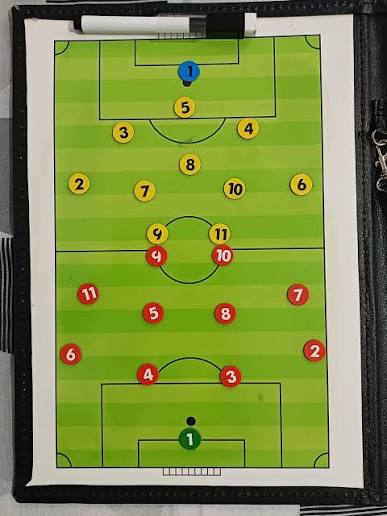

O que é a saída de bola e como funciona?
Por Equipe Blog de Futebol do Bruno
A saída de bola é a primeira fase da construção ofensiva de uma equipe. Por meio de movimentações coordenadas entre goleiro, zagueiros e volantes, como a criação de superioridade numérica e passes curtos, é possível superar a pressão adversária e avançar no campo.